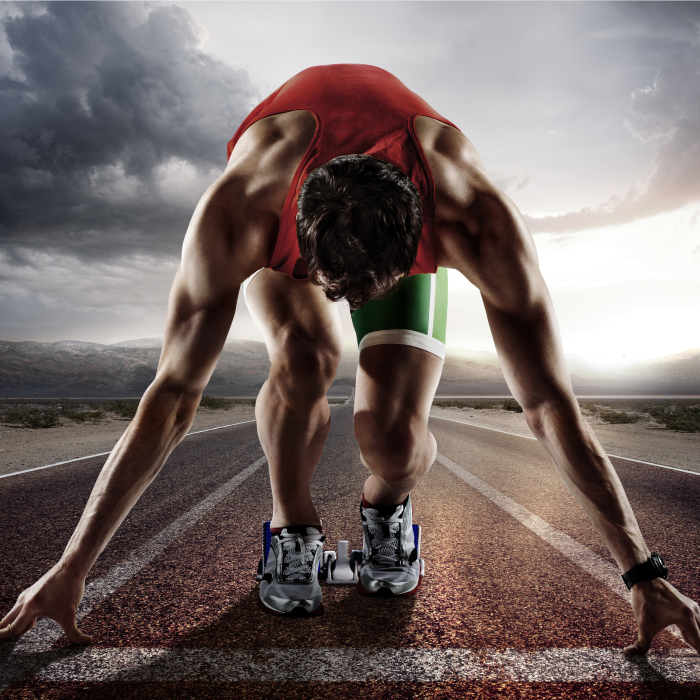

1. От чего зависит успех в занятиях физической культурой и спортом:
2. Что относится к основным физическим способностям:
3. От чего зависит количество подтягиваний на перекладине:
4. От чего зависит дальность прыжка в длину:
5. От чего зависит прыжок в высоту:
6. От чего зависит дальность метания:
7. От чего зависит быстрота бега на короткую дистанцию:
8. Какие способности необходимо развивать для быстрой ориентации на площадке, точной реакции на действия противника, меткости бросков и т.д.?

9. Что такое физические способности?
10. Что НЕ относится к основным физическим способностям?